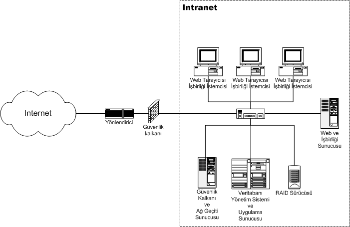

Outros Tipos de Internet que existem
Ethernet
Conceito:
Nascida na década de 1970, é uma tecnologia crucial para conectar dispositivos em redes locais, como computadores, impressoras e roteadores. Através de cabos, ela permite a troca eficiente de dados, sendo fundamental para o funcionamento de residências, escritórios, escolas e empresas.Sua popularidade se deve à confiabilidade, velocidade, baixo custo, facilidade de instalação e padronização aberta. Versões como Fast Ethernet, Gigabit Ethernet e 10 Gigabit Ethernet atendem a diferentes demandas de velocidade.Utilizada em larga escala, a Ethernet é essencial para a infraestrutura de internet moderna, conectando pessoas e informações em todo o mundo.
Intranet
Conceito:
A intranet, nascida da internet, é uma rede privada para uso interno de empresas e organizações. Funcionando como uma "internet particular", ela conecta computadores, tablets e smartphones dos colaboradores, permitindo acesso a:
- Documentos e arquivos importantes: manuais, relatórios, apresentações, etc;
- Sistemas internos: folha de pagamento, controle de estoque, gerenciamento de projetos, etc;
- Ferramentas de comunicação: e-mail interno, chat corporativo, fóruns de discussão, etc;
- Notícias e comunicados da empresa: novidades, eventos, mudanças na organização, etc;
Tudo isso para melhorar a comunicação interna, aumentar a produtividade, reduzir custos, proteger informações e promover a cultura organizacional. A intranet é uma ferramenta essencial para o sucesso de empresas e organizações na era digital.

Extranet
Conceito:
A extranet, ponte entre a empresa e o mundo externo, é uma rede privada segura que conecta a intranet a clientes, parceiros, fornecedores e outros públicos específicosCom acesso controlado e login e senha, permite o compartilhamento seguro de documentos, catálogos, portais de atendimento e informações relevantes, otimizando a comunicação, aumentando a produtividade e reduzindo custos.
Seja para clientes acessarem catálogos e suporte, parceiros colaborarem em projetos ou fornecedores enviarem notas fiscais, a extranet se torna um canal estratégico para diversos setores, impulsionando negócios e construindo relações sólidas.